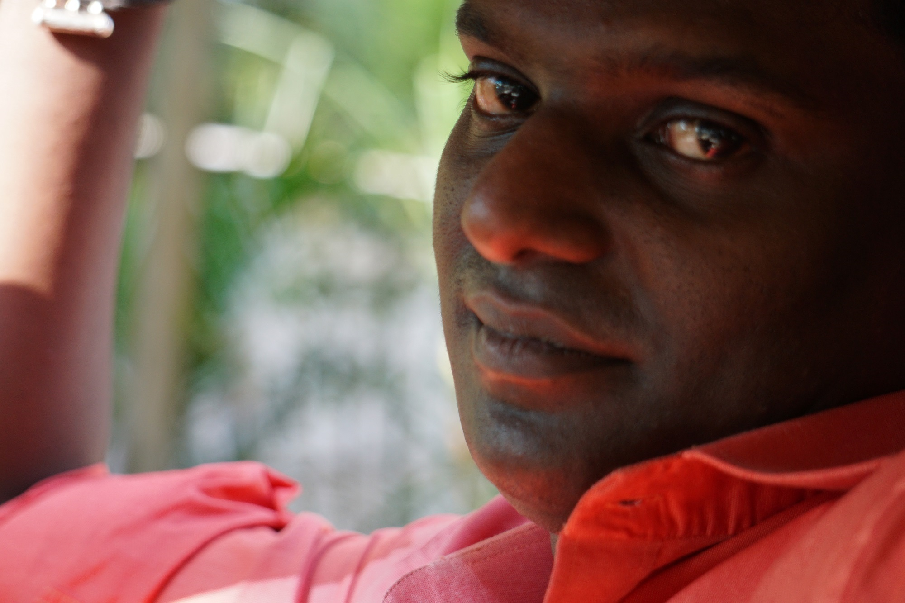

What I Work On
My work sits where engineering, technology, operations and creative thinking meet.
Technology & Software
Building practical websites, applications, APIs, dashboards and digital tools that turn operational requirements into usable systems.
Engineering & Systems
Designing connected systems across hardware, software, networking, automation and real-world workflows, with emphasis on reliability and clarity.
Automation & Integration
Connecting people, processes, devices and data to reduce repetitive work, improve visibility and make day-to-day operations easier to manage.
Design & Communication
Creating clear digital experiences, interfaces, visual systems and written communication where function and presentation need to work together.
Photography
Photography focused on people, places, products, architecture, travel and everyday moments, with an emphasis on composition and visual storytelling.
Creative Production
Working with photography, video and digital content to document ideas, communicate information and support creative and professional projects.
About Me

Hi There
I work at the intersection of engineering, technology, systems, design and operations. My approach is hands-on: understand the problem, break down the complexity, design a practical solution and make it work in the real world.
My experience spans technical systems, software and automation, networking and infrastructure, digital design, photography and operational technology. This combination helps me look at problems from both technical and human perspectives.
I enjoy building things from the ground up—from focused utilities and automation tools to larger systems that connect people, processes, hardware and software. I am particularly interested in problems where there is no obvious answer and where better structure can make a complicated process simpler and more reliable.
- Name:
- Binesh Ellupurayil Balachandran
- Email:
- binesheb@gmail.com
Get in touchContact MeDownload CVDownload PDF
Capabilities
Practical capability built through hands-on engineering, technology and operational work.
Systems Thinking
Breaking complex requirements into connected components, workflows and measurable outcomes.
Automation
Designing repeatable workflows that connect data, devices, applications and people.
Infrastructure
Networking, servers, connectivity, monitoring and the practical technology behind reliable operations.
Software
Building focused tools and applications with an emphasis on usability, maintainability and real-world deployment.
Design
Bringing structure, visual hierarchy and user-focused thinking to digital and physical communication.
Creative Work
Photography, visual storytelling and content creation used to document and communicate ideas.
Selected Projects
A growing collection of practical systems, automation tools and technology experiments.
BINESH OS
A modular automation and systems platform exploring deterministic workflows, device integration, monitoring, diagnostics and operational control.
View on GitHubNavIC / GPS Bridge
A hardware-software concept for making positioning data from NavIC/GPS systems available to GPS-enabled equipment, with monitoring and diagnostics.
Parking Management
A practical capacity-control concept for tracking occupancy, available spaces and reserved capacity while controlling vehicle entry.
ID Card Generator
A streamlined employee ID-card workflow designed to simplify structured data entry, photo handling, generation and repeatable printing.
View projectHR & Payroll Automation
Workflow design and automation for attendance processing, leave logic, compensatory-off eligibility, payroll preparation and biometric integration.
Networks & Infrastructure
Hands-on work with enterprise networking, multi-ISP connectivity, routing, wireless infrastructure, servers, monitoring and operational systems.
Let’s Build Something Useful
Have a technical problem, system idea, automation requirement or creative project? Let’s start with the problem and work towards a practical solution.